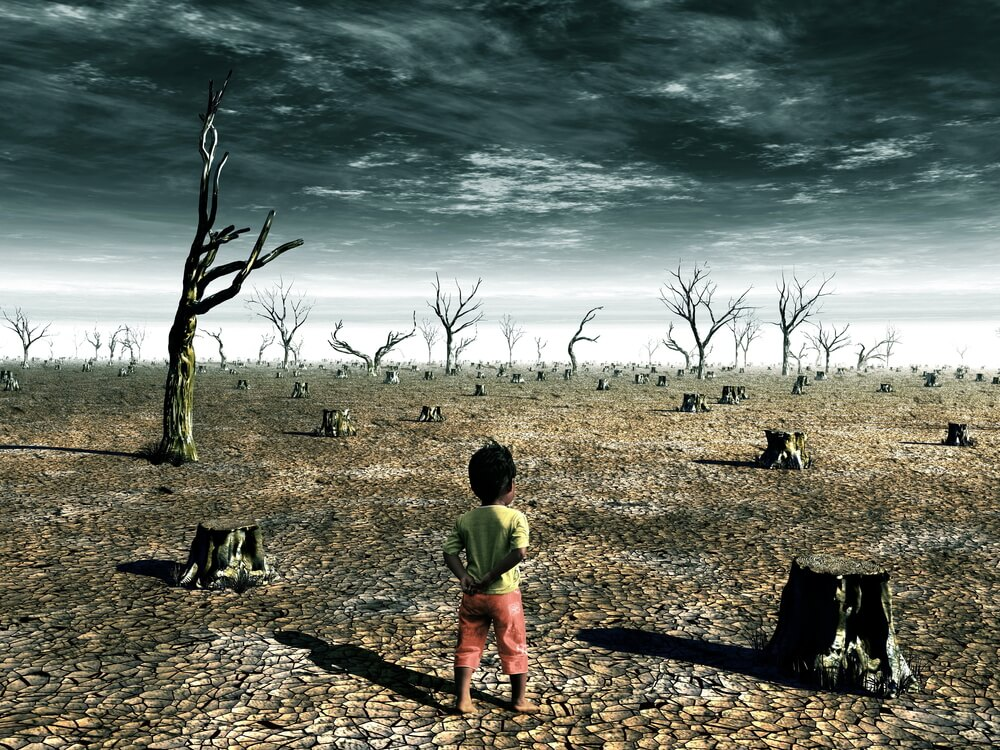

Nature in Mind.
There’s no mystery about why nature is under threat. The assault on the natural world comes from all directions but especially from harmful human activity.
Within the past four decades, research has been increasingly drawn toward understanding whether there is a link between the changing human–nature relationship and its impact on people’s health. However, to examine whether there is a link requires research of its breadth and underlying mechanisms from an interdisciplinary approach.

Nature In Danger
Nature is declining globally at rates unprecedented in human history – and the rate of species extinctions is accelerating, with grave impacts on people around the world now likely, warns a landmark new report from the Intergovernmental Science-Policy Platform on Biodiversity and Ecosystem Services (IPBES). Human destruction of nature is rapidly eroding the world’s capacity to provide food, water and security to billions of people.
We are living on this planet as if we had another one to go.
We are experiencing the world’s sixth mass extinction but this time, it’s caused by us! From the huge African elephant down to tiny dung beetles and microscopic phytoplankton, we are losing species at 1,000 times the natural rate. One million animal and plant species are now threatened with extinction, many within decades.
Qualities
Nature can teach values such as:
- Mentality
- Peace
- Resilience
- Wisdom
- Cautious
- Patience
There is no silver-bullet solution to halting and then reversing nature’s decline. Turning things around will require lots of actions by lots of players. The United Nations’ Global Biodiversity Outlook report is clear that “continuing with … our present patterns of behaviour, consumption, production and economic incentives will not allow us to realise the vision of a world with ecosystems capable of meeting human needs into the future.”